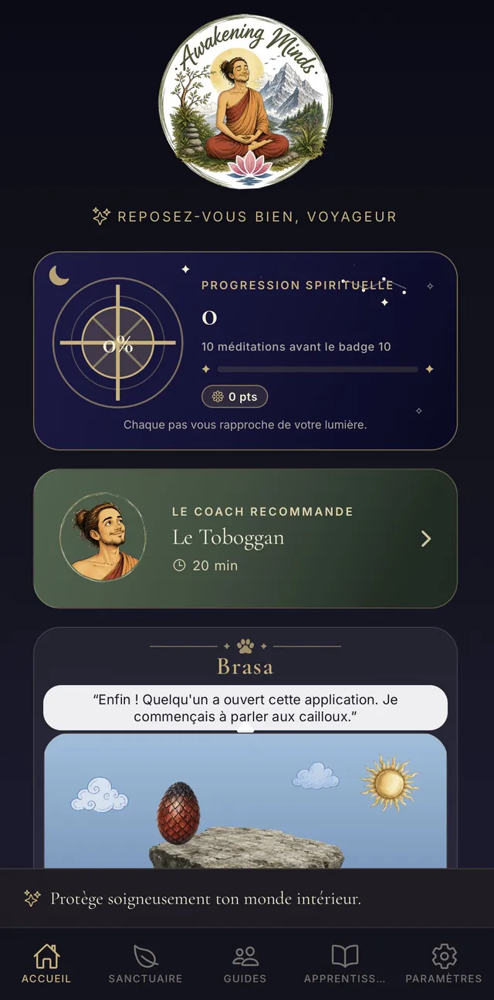
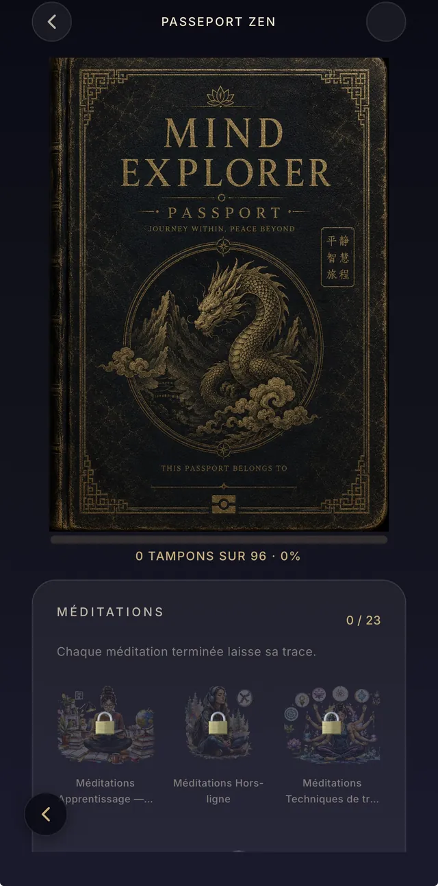
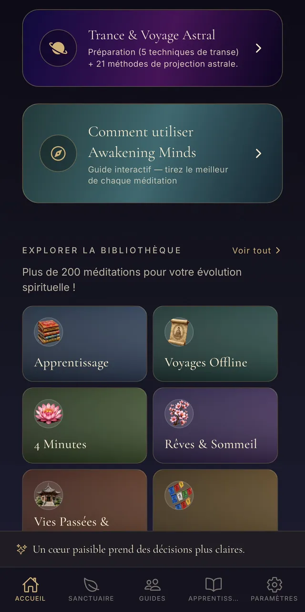
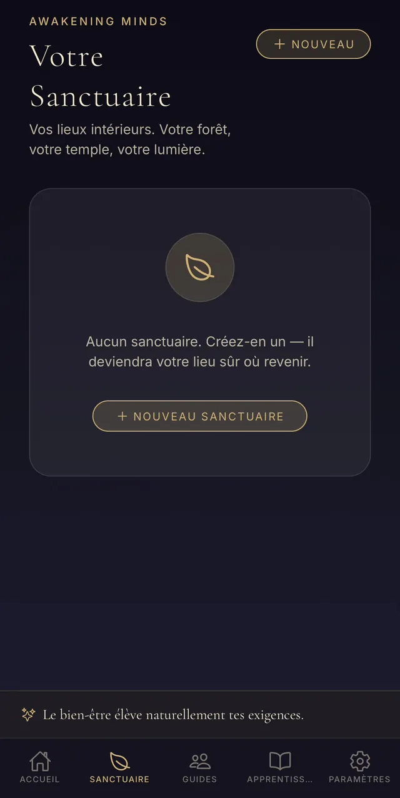
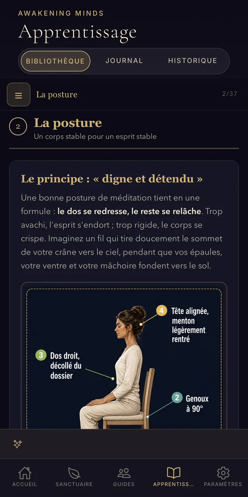
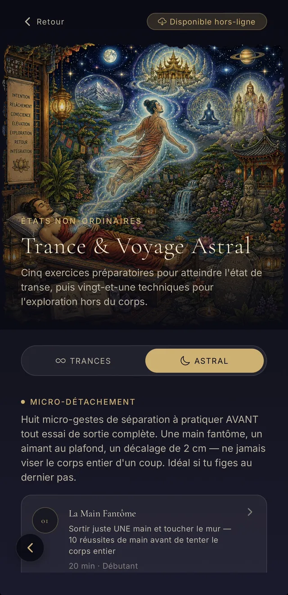
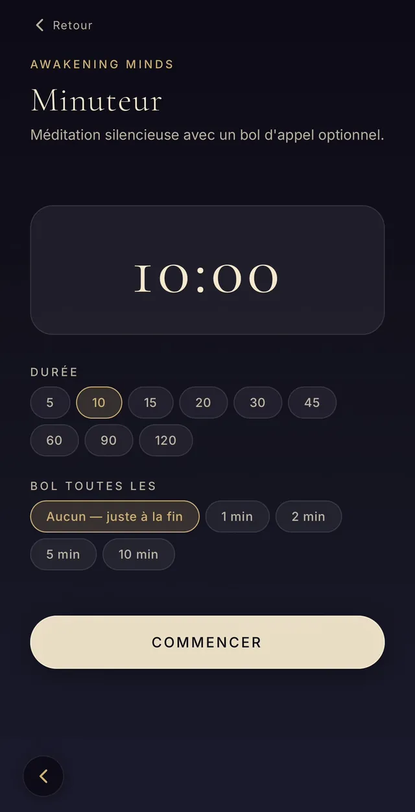
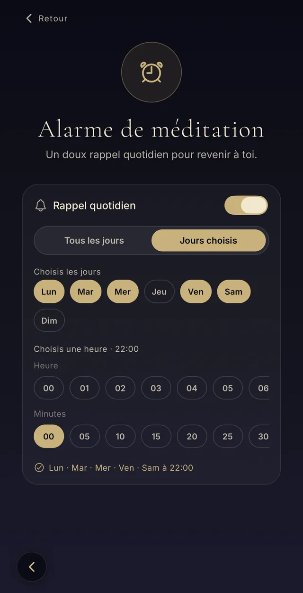
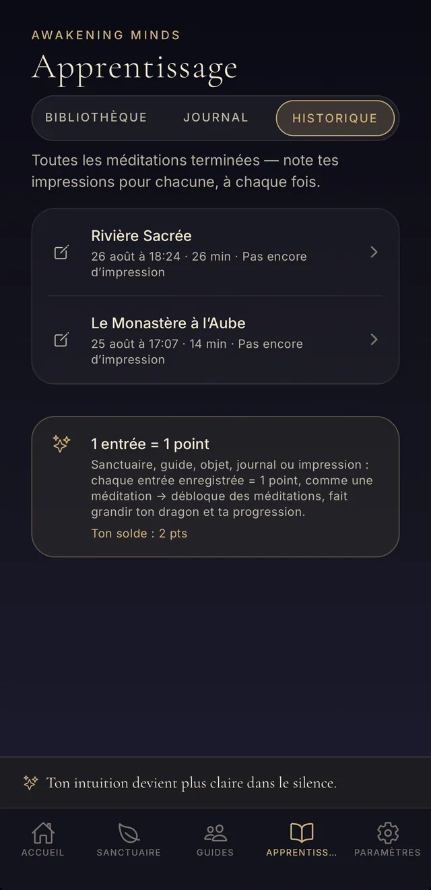

Apprends à méditer et éveille ton esprit : 150 méditations guidées pour t'endormir, respirer et t'apaiser, dont 17 mondes immersifs, un compagnon dragon et un journal de ton évolution. Tout s'écoute hors ligne, sans jamais rien payer.
Apprendre la méditation et soutenir ton développement spirituel. C'est tout. Pas d'abonnement caché, pas de publicité, pas de compte à créer, pas de données collectées : tu ouvres l'app, et tu respires.

Des premiers pas du débutant aux explorations les plus profondes : sommeil, respiration, calme, pleine conscience… Chaque catégorie est un univers, avec son illustration, sa voix et son ambiance.

Huit séances pour poser les fondations : balayage corporel, souffle, pensées, cinq sens, yeux ouverts, première méditation silencieuse.
8 méditations
De courtes méditations entièrement hors-ligne — trouvez le calme, recentrez-vous, ou endormez-vous en quatre minutes.
11 méditations
Souffle, chakras, sons, relaxations profondes et endormissement.
15 méditations
Amour, gratitude, compassion, pardon — cultiver le cœur intérieur.
8 méditations
Rencontrez ce dont vous vous êtes détourné, avec douceur.
10 méditations
Temples, forêts, montagnes, océans, feu.
7 méditations
Rencontrez les voix qui marchent avec vous.
5 méditations
Retrouvailles, mémoires transgénérationnelles, accès aux annales : le voyage vers ce qui nous dépasse.
3 méditations
Voyages aux mondes d'en bas, d'en haut, du milieu. Animal de pouvoir, âme des lieux, chaudron celte.
4 méditationsSur les pas des bodhisattvas : sagesse, compassion et clarté.
8 méditationsChaleur des mains, petite circulation, arbre immobile : le corps en mouvement intérieur.
4 méditationsEntraîner l’œil intérieur : voir, entendre et toucher en imagination.
7 méditationsUn voyage complet en une séance : un lieu, une époque, une histoire.
4 méditationsLe point entre les sourcils, l’image qui apparaît seule, le mandala qui se construit.
5 méditations
Voyagez au-delà. Étoiles, vide, l'immensité intérieure.
2 méditations
Troisième œil, astral, mondes symboliques.
8 méditationsTrois catégories dédiées aux techniques de transe, au micro-détachement et aux voyages astraux — pour les explorateurs.
Huit voyages en transe : descente progressive, mondes d’en bas et d’en haut, vies passées, contrat de l’âme, couloir aux mille portes, talents oubliés, soi futur.
8 méditationsCinq micro-gestes de séparation à pratiquer avant toute sortie complète : l’aimant au plafond, le petit décalage, le point derrière la tête, le toboggan, s’asseoir fantôme.
5 méditationsOnze protocoles de sortie : flottement, redressement, membres intérieurs, corde, chute imaginaire, cible, rencontre, déplacement, vision, visualisation du double.
11 méditationsUn monde = une méditation immersive complète (une vingtaine de minutes, à sa durée réelle), avec son décor, sa lumière, ses sons et son récit. Télécharge-le une fois, et médite hors ligne où que tu sois.

Un temple sacré caché haut dans les montagnes brumeuses.

Un temple divin flottant au-delà du réel, au-dessus des étoiles.

Un monde de cristal lumineux et sans fin, loin sous terre.

Flottez paisiblement à travers l’espace cosmique profond.

Un monde caché au plus profond de la Terre.

Un ancien sanctuaire extraterrestre sous la glace antarctique.

Une île tropicale paisible flottant au-dessus des nuages.

Un jardin japonais traditionnel d’un calme parfait.

Une civilisation sous-marine perdue d’une sérénité profonde.

Un monastère sacré haut dans les montagnes, à l’aube.

Une bibliothèque infinie flottant au-delà du réel.

Une oasis mystique sous un ciel de désert rempli d’étoiles.

Un arbre sacré immense, relié à toute la vie.

Une ancienne cité perdue, reprise par la jungle.

Une forêt onirique et lumineuse.

Un royaume réfléchissant de conscience infinie.

Une forêt au clair de lune, gardée par d’anciens esprits loups.
Sanctuaires, journaux, minuteur, alarme : au-delà des méditations guidées, l'app devient peu à peu ton carnet de route intérieur.
Crée tes lieux intérieurs — forêt, grotte, temple, île… — et reviens y méditer.
Note les guides rencontrés en méditation : leur type, leurs messages, leurs réapparitions.
Les objets reçus en voyage intérieur, gardés et décrits, avec leur sens pour toi.
Un journal personnel structuré : rêves, gratitude, émotions, signes… et un historique de chaque méditation avec tes impressions.
Ton compagnon grandit avec ta pratique (11 stades), et son île évolue avec lui — rocher, prairie, arbre, cascade, cristal, temple, cosmos.
Des tampons à collectionner : méditations, mondes, guides, séries, badges d'assiduité.
Un conseil du jour adapté à ton heure, ta régularité et ton programme personnel issu du questionnaire d'accueil.
1 méditation = 1 point, 1 entrée = 1 point. Près de la moitié des méditations est libre dès le départ ; tout est ouvert à 20 points.
Trouve une méditation par mot-clé — sommeil, stress, confiance, enfant intérieur, chakra…
Un doux rappel quotidien ou certains jours seulement, à l'heure que tu veux.
Six crans, de 0,75× à 1×, hauteur préservée. Et un rythme personnel pour les pauses entre les phrases.
Pluie, forêt, bol tibétain… un fond sonore pendant la séance, à ton volume.
Une bibliothèque illustrée pour débuter : postures, souffle, attention, respiration, avec des schémas dans ta langue.
Télécharge tes méditations et tes mondes : ils jouent sans réseau, pour toujours.
Fais défiler pour parcourir l’application de méditation telle qu’elle est sur ton téléphone — chaque écran est légendé.


















Deux minutes pour voir les méditations guidées, les mondes immersifs et les journaux en action.
Oui — et pour toujours. Aucune méditation payante, aucun abonnement, aucune publicité, aucun achat intégré. C'est un choix : la méditation doit rester accessible à tous.
Non. Aucune inscription, aucun email demandé. Tu installes l'application, tu choisis ta langue et ta voix, et tu commences ta première méditation guidée. Tes données restent sur ton téléphone.
Oui : chaque méditation et chaque monde se téléchargent une fois, puis s'écoutent partout — en avion, en montagne, dans le métro. La séance elle-même ne demande jamais de connexion.
Oui, toute une catégorie Corps, calme & sommeil : méditations guidées pour s'endormir, relaxations profondes, et un journal des rêves pour le réveil. → Lire : Méditation pour dormir
Oui : la catégorie Apprentissage t'apprend à méditer pas à pas — posture, respiration, attention — en séances courtes, et la catégorie 4 Minutes offre des pauses express. → Lire : Apprendre à méditer, le guide du débutant
Français, anglais et espagnol, avec deux voix naturelles par langue. Chaque méditation est écrite et narrée dans ta langue — pas de traduction automatique.
Gratuite sur l’App Store et Google Play. Aucune inscription, aucun abonnement : tu installes, et tu respires.
Awakening Minds est un outil d'apprentissage et de bien-être. Il ne constitue ni un avis médical, ni un diagnostic, ni un traitement, et ne remplace jamais l'accompagnement d'un professionnel.